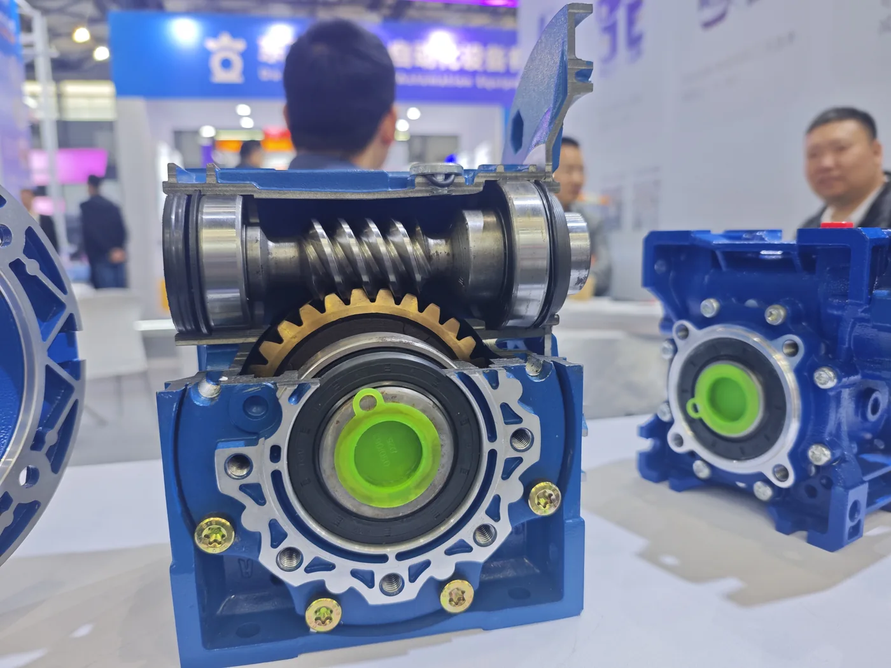

The photograph above is a real cutaway gearbox display showing the internal worm shaft, worm wheel, bearings and housing. It illustrates the sliding-contact gearset used inside an industrial NMRV worm gear reducer.
What Is the Difference Between a Worm and a Worm Wheel?
| Component | Function | Common material approach | Selection checks |
|---|---|---|---|
| Worm | Screw-like input element connected to the motor side | Hardened or case-hardened steel, subject to design | Starts, lead angle, surface finish, hardness and input speed |
| Worm wheel | Driven gear that provides the reduced-speed output | Bronze gear rim or compatible bronze alloy, subject to load and design | Tooth count, alloy, bore, hub, torque and lubrication |
| Worm gearbox | Complete assembly containing the gearset | Gearset plus housing, bearings, seals and lubricant | Ratio, torque, service factor, mounting and thermal capacity |
How Do the Worm and Worm Wheel Work?
The motor rotates the worm. Its helical thread pushes the teeth of the worm wheel, turning the output shaft at 90 degrees to the input. The ratio depends mainly on the number of worm starts and worm-wheel teeth.
For ratio and speed examples, use the worm gearbox ratio and torque calculator. Do not approve a gearbox from ratio alone.
Why Pair a Steel Worm with a Bronze Worm Wheel?
Worm gearing has more sliding contact than many rolling-contact gear designs. A properly finished steel worm provides strength and surface durability, while a compatible bronze wheel offers useful sliding, conformity and wear characteristics. This pairing also helps avoid using two equally hard mating surfaces under sustained sliding.
The exact steel grade, heat treatment and bronze alloy are engineering decisions. They depend on transmitted torque, input speed, starts per hour, expected life, lubricant chemistry, temperature and manufacturing method.
| Material factor | Why it matters |
|---|---|
| Worm hardness and finish | Affects tooth-surface durability, friction and wear of the mating wheel |
| Bronze alloy | Influences load capacity, wear behavior, temperature resistance and cost |
| Lubricant compatibility | Must support sliding contact and remain compatible with copper or bronze alloys |
| Operating temperature | Changes oil viscosity and can accelerate oxidation or wear |
| Surface alignment | Poor contact distribution concentrates load and damages the tooth surfaces |
Worm Gear, Worm Wheel and Worm Gearbox Terminology
Search terms are often used interchangeably, but the parts are different:
- Worm gear: may refer to the worm drive as a concept, but technically the worm is the screw-like driving member.
- Worm wheel: the larger driven gear meshing with the worm.
- Worm gearset: the worm and worm wheel considered together.
- Worm gearbox or worm reducer: the complete enclosed transmission assembly.
What Causes Worm and Worm-Wheel Wear?
Common causes include excessive load, an unsuitable service factor, low or incorrect lubricant, contamination, poor alignment, repeated shock starts and excessive temperature. Inspect the unit if noise, backlash, vibration, leakage or housing temperature changes significantly.
Use the worm gearbox lubricating-oil guide and the efficiency and temperature guide when checking operating conditions.
How to Select a Worm Gearbox
For a reliable recommendation, provide:
- Motor power, rated speed, voltage and frequency
- Required output speed or reduction ratio
- Continuous, starting and peak output torque
- Operating hours, starts per hour and reversing duty
- Service factor and shock-loading conditions
- Mounting position and shaft arrangement
- Ambient temperature, dust, moisture and washdown exposure
- Output bore, flange and motor-interface dimensions
Compare the NMRV RV25–RV150 size guide and the NMRV mounting-position guide before confirming the final assembly.
Frequently Asked Questions
Is a worm gear the same as a worm wheel?
No. The worm is the screw-like driver; the worm wheel is the larger driven gear.
Why is bronze commonly used for the worm wheel?
A suitable bronze alloy provides favorable sliding and wear behavior against a hardened steel worm. The final alloy must suit the load, speed, lubrication and service conditions.
Can the worm wheel drive the worm backward?
Backdriving depends on lead angle, ratio, friction, lubrication, vibration and load. Do not assume every worm gearbox is self-locking or use assumed self-locking instead of a brake in safety-critical equipment.
What information is needed for gearbox selection?
Provide motor data, required output speed and torque, duty, mounting position, shaft arrangement and operating environment.